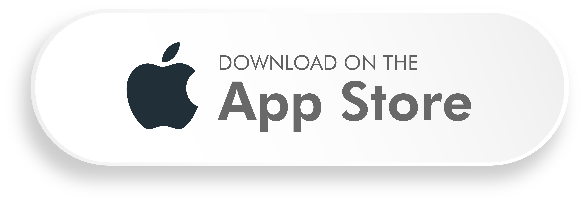
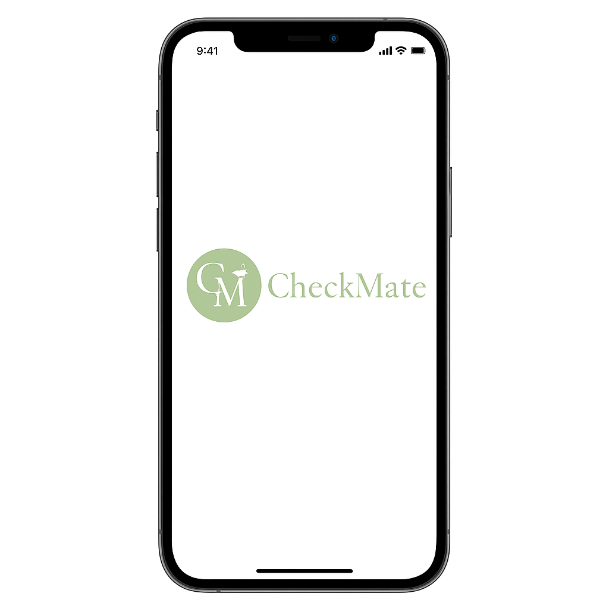

<!DOCTYPE html>
<html></html>
<head>
    <meta charset="UTF-8">
    <meta name="viewport" content="width=device-width, initial-scale=1.0">
    <title>CheckMate</title>
    <link rel="stylesheet" href="https://cdn.jsdelivr.net/npm/bootstrap@4.4.1/dist/css/bootstrap.min.css" integrity="sha384-Vkoo8x4CGsO3+Hhxv8T/Q5PaXtkKtu6ug5TOeNV6gBiFeWPGFN9MuhOf23Q9Ifjh" crossorigin="anonymous">
    <link rel="stylesheet" href="style.css">
    <link rel="stylesheet" href="https://cdnjs.cloudflare.com/ajax/libs/font-awesome/6.5.0/css/all.min.css">
    

</head>

<body>

<div class = "header">
    
    <div class = "right-Side">
    <button id="lang"><i class="fa-solid fa-globe"></i> Sprache</button>
    <button id="sign">Einloggen</button>
    </div>
    
</div>    

<div class="img">
    
    
    
    
</div>


<h1>Du bist nicht allein!</h1>
<h2>Finde deinen Study Partner fürs Studium</h2>
<div class="container section-list my-5">
    <!-- Button zentriert -->
    <div class="button-container">
      <button id="register" >
        Jetzt starten
      </button>
    </div>


       <!-- Erfolgsstory 1 -->
      <div class="story1">
        
        <div class="story-text">
            <h4>Erfolgsgeschichte von Lisa und Max</h4>
          <p>
            <strong>Lisa</strong> (BWL) und <strong>Max</strong> (Wirtschaftsinformatik) haben sich über
            <strong>CheckMate</strong> kennengelernt – ursprünglich nur, um gemeinsam für die Mathe-Klausur zu lernen. 📚  
          </p>
          <p>
            Aus Lerntreffen wurden regelmäßige Study Sessions in der Bibliothek – und schließlich
            ein richtig gutes Team, das sich gegenseitig motiviert, Feedback gibt und zusammen
            durchs Semester zieht. 💪
          </p>
          <p>
            „Ohne CheckMate hätte ich nie jemanden gefunden, der genau so ehrgeizig (und
            gleichzeitig chaotisch) lernt wie ich“, lacht Lisa. „Jetzt macht selbst Statistik Spaß!“ 😄
          </p>
        </div>
      </div>

    <div class="story2">
        
        <div class="story-text">
            <h4>Erfolgsgeschichte von Mia</h4>
          <p>
            <strong>Mia</strong> studiert im fünften Semester Maschinenbau und wollte ihr Wissen weitergeben –  
            also hat sie sich bei <strong>CheckMate</strong> als Tutorin angemeldet. 🧠💡
          </p>
          <p>
            Schon nach wenigen Tagen meldeten sich mehrere Studierende aus niedrigeren Semestern bei ihr,  
            die Unterstützung in Mathe II und Thermodynamik suchten. Durch ihre regelmäßigen Online-Sessions  
            konnte Mia nicht nur anderen helfen, sondern auch selbst ihr Wissen festigen und neue Lernmethoden entwickeln.
          </p>
          <p>
            „Ich hätte nie gedacht, dass mir Nachhilfe so viel Spaß machen kann“, erzählt sie.  
            „CheckMate macht es total einfach, passende Lernpartner:innen zu finden –  
            und ich verdiene dabei sogar etwas dazu. Ein richtig gutes Gefühl!“ 🌿✨
          </p>
        </div>
      </div>

    <div class="story3">
        
        <div class="story-text">
            <h4>Erfolgsgeschichte einer Study Group</h4>
          <p>
            Was als spontane Lerngruppe für die Statistik-Klausur begann, wurde zu einer richtigen  
            <strong>Study-Community</strong>: <strong>Anna</strong>, <strong>Lukas</strong>, <strong>Jonas</strong> und <strong>Sophie</strong>  
            haben sich über <strong>CheckMate</strong> gefunden – und treffen sich seitdem regelmäßig zum Lernen. 📚☕️
          </p>
          <p>
            Anfangs wollten sie sich nur gegenseitig beim Rechnen helfen, aber schon nach ein paar Wochen  
            wurde daraus ein festes Ritual: Gemeinsames Lernen in der Bib, Austausch über Lernstrategien  
            und gegenseitige Motivation – besonders in Prüfungsphasen.
          </p>
          <p>
            „Wir haben uns über CheckMate kennengelernt, aber inzwischen sind wir mehr als Lernpartner“,  
            erzählt Jonas. „Wir pushen uns gegenseitig, wenn’s stressig wird – und feiern zusammen,  
            wenn’s geschafft ist.“ 🎉
          </p>
        </div>
      </div>

<!-- Get the APP -->
<div class="getapp">
    <div class="getapp-text">
      <h4>Hol dir die App</h4>
      <p>Scanne den QR-Code, um loszulegen!</p>
      
      <div class="store-buttons">
        <a href="https://play.google.com/store/apps/" target="_blank" rel="noopener">
            
          </a>
          <a href="https://apps.apple.com/app" target="_blank" rel="noopener">
            
          </a>
      </div>
    </div>
    
  </div>

 <!-- ABOUT -->
<details class="about">
    <summary>
      <span>Über uns</span>
      <span class="chevron" aria-hidden="true"></span>
    </summary>
    <div class="about-body">
        <p>
            <strong>CheckMate</strong> ist mehr als nur eine Plattform – es ist eine kleine Community
            von Studierenden, die sich gegenseitig unterstützen, motivieren und gemeinsam durchs Studium gehen.
            Wir wissen, dass Lernen manchmal einsam oder überwältigend sein kann – und genau da wollen wir ansetzen. 🌱
          </p>
          
          <p>
            Hier findest du Menschen, die zu dir passen: Lernpartner:innen, Mitstreiter:innen, Freund:innen
            oder einfach jemanden, der versteht, was du gerade durchmachst. Ob Bibliotheksmarathon,
            Prüfungsstress oder Kaffeepause zwischendurch – zusammen geht’s leichter. ☕✨
          </p>
          
          <p>
            Und das Beste? Du kannst bei <strong>CheckMate</strong> auch erfahrene Studierende aus höheren Semestern
            als Tutor:innen buchen – für gezielte Hilfe, praktische Tipps und persönliche Unterstützung
            in genau den Modulen, die du gerade brauchst. 🎓🤝
          </p>
          
          <p>
            Unser Ziel ist es, das Lernen wieder persönlicher, motivierender und ein kleines bisschen schöner zu machen –
            damit du nicht nur dein Studium meisterst, sondern auch Menschen triffst, die dich wirklich weiterbringen.
            <br><br>
            <em>Let’s study smarter. Together. 💚</em>
          </p>
        </div>
  </details>
  
  <!-- KONTAKT -->
  <details class="contact">
    <summary>
      <span>Kontakt</span>
      <span class="chevron" aria-hidden="true"></span>
    </summary>
    <div class="contact-body">
        <p>
            Du hast Fragen, Feedback oder möchtest einfach kurz „Hallo“ sagen?  
            Schreib uns gern an <a href="mailto:hello@checkmate.app">hello@checkmate.app</a> –  
            wir freuen uns, von dir zu hören! 💬
          </p>
          
          <p>
            Egal ob du Hilfe brauchst, Ideen teilen möchtest oder einfach neugierig auf CheckMate bist –  
            wir sind für dich da und antworten so schnell wie möglich. 💚
          </p>
        </div>
  </details>

   <!-- FAQ -->
   <details class="faq">
    <summary>
      <span>FAQ</span>
      <span class="chevron" aria-hidden="true"></span>
    </summary>
    <div class="faq-body">
        <p>
            Hier findest du bald Antworten auf die häufigsten Fragen rund um <strong>CheckMate</strong> –  
            von „Wie finde ich meinen Study Partner?“ bis hin zu  
            „Wie kann ich selbst als Tutor:in aktiv werden?“. 💬
          </p>
          
          <p>
            Wir arbeiten gerade daran, die häufigsten Themen übersichtlich für dich zusammenzustellen.  
            Schau also bald wieder vorbei – dein FAQ wächst mit unserer Community! 🌿
          </p>
        </div>
  </details>


  <footer class="footer">
    <div class="footer-content">
      <div class="footer-logo">
        
      </div>
      <div class="footer-links">
        <a href="#">About</a>
        <a href="#">FAQ</a>
        <a href="#">Kontakt</a>
        <a href="#">Impressum</a>
      </div>
      <div class="footer-socials">
        <a href="#"><i class="fa-brands fa-instagram"></i></a>
        <a href="#"><i class="fa-brands fa-linkedin"></i></a>
        <a href="#"><i class="fa-brands fa-github"></i></a>
      </div>
    </div>
    <div class="footer-bottom">
      <p>© 2025 CheckMate • Gemeinsam schlauer lernen 💚</p>
    </div>
  </footer>


     <!-- Google Translate Container (unsichtbar) -->
  <div id="google_translate_element" style="display:none;"></div>

  <!-- Google Translate Script -->
  <script type="text/javascript">
    function googleTranslateElementInit() {
      new google.translate.TranslateElement(
        { pageLanguage: 'de', includedLanguages: 'en' },
        'google_translate_element'
      );
    }
  </script>
  <script type="text/javascript"
    src="//translate.google.com/translate_a/element.js?cb=googleTranslateElementInit"></script>

  <!-- Button Logik -->
  <script>
    // Sprache wechseln
    document.getElementById('lang').addEventListener('click', () => {
      const select = document.querySelector('.goog-te-combo');
      if (select) {
        select.value = select.value === 'en' ? 'de' : 'en';
        select.dispatchEvent(new Event('change'));
      } else {
        alert("Google Translate konnte noch nicht geladen werden. Bitte kurz warten.");
      }
    });
// Platzhalter für to be contiunued Seite 
    const buttons = ['register', 'sign'];
  buttons.forEach(id => {
    document.getElementById(id).addEventListener('click', () => {
      document.body.innerHTML =
        "<h1 style='text-align:center;margin-top:40vh;'>🚧 To be continued...</h1>";
    });
  });
  
  </script>
<script>
    // Nur auf Smartphones aktivieren
    if (window.matchMedia("(max-width: 600px)").matches) {
      document.querySelectorAll('.story1 .story-text, .story2 .story-text, .story3 .story-text')
        .forEach(block => {
          const paragraphs = block.querySelectorAll('p');
          const title = block.querySelector('h4');
          if (!title || paragraphs.length < 2) return; // Nur aktivieren, wenn mehr als 1 Absatz
  
          // Startzustand: collapsed
          block.setAttribute('data-collapsed', 'true');
  
          // "Mehr anzeigen" Link hinzufügen (nach dem ersten Absatz)
          const btn = document.createElement('button');
          btn.className = 'show-more';
          btn.type = 'button';
          btn.textContent = 'Mehr anzeigen';
         paragraphs[0].after(btn);

         
  
       // Klicklogik
btn.addEventListener('click', () => {
  const collapsed = block.getAttribute('data-collapsed') === 'true';
  block.setAttribute('data-collapsed', collapsed ? 'false' : 'true');
  btn.textContent = collapsed ? 'Weniger anzeigen' : 'Mehr anzeigen';

  // wenn geöffnet → Button ans Ende verschieben
  if (collapsed) {
    block.appendChild(btn);
  } 
  // wenn wieder geschlossen → Button unter ersten Absatz setzen
  else {
    const firstP = block.querySelector('p');
    if (firstP) firstP.after(btn);
  }
});
        });
    }
  </script>

</div>
</body>
</html> 
